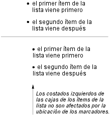

Contenidos
En ciertos casos, los autores pueden desear que las aplicaciones del usuario procesen contenidos que no vienen en la estructura del documento. Un ejemplo familiar de esto es una lista numerada; el autor no quiere hacer la lista de números explícitamente, el o ella quiere que la aplicación del usuario la genere automáticamente. De modo similar, los autores pueden querer que la aplicación del usuario inserte la palabra "Figura" antes del encabezado de una imagen, o "Capítulo 7" antes del séptimo título del capítulo. Para audio o braille en particular, las aplicaciones del usuario deben ser capaces de insertar estas cadenas.
En CSS2, el contenido puede ser generado a través de distintos mecanismos:
Abajo describimos los mecanismos asociados con la propiedad 'content'.
Los autores especifican el estilo y la ubicación del contenido generado con los pseudo-elementos :before y :after. Como sus nombres lo indica, los pseudo-elementos :before (antes) y :after (después) especifica la ubicación del contenido antes o después del contenido de la estructura del documento de un elemento. La propiedad 'content', junto con estos pseudo-elementos, especifican lo que se inserta.
Por ejemplo, la siguiente regla inserta la cadena "Nota: " antes del contenido de cada elemento P cuyo atributo "class" tenga el valor "nota":
P.nota:before { content: "Nota: " }
El formato de los objetos (ej., cajas) generados por un elemento incluye el contenido generado. De modo que, por ejemplo, cambiando la hoja de estilo anterior a:
P.nota:before { content: "Nota: " }
P.nota { border: solid green }
causaría que un borde verde sólido fuera procesado alrededor de todo el párrafo, incluyendo la cadena inicial.
Los pseudo-elementos :before y :after heredan cualquier propiedad hereditable del elemento en la estructura del documento al cuál están ligados.
Por ejemplo, las siguientes reglas insertan comillas de apertura antes de cada elemento Q. El color de la comillas será rojo, pero la fuente será la misma que la del resto del elemento Q:
Q:before {
content: open-quote;
color: red
}
En la declaración de un pseudo-elemento :before o :after, las propiedades no hereditables toman sus valores iniciales.
De modo que, por ejemplo, debido a que el valor inicial de la propiedad 'display' es 'inline', las comillas en el ejemplo previo se insertan como una caja a nivel de línea (es decir, en la misma línea que el contenido de texto inicial del elemento). El siguiente ejemplo pone la propiedad 'display' como 'block', de modo que el texto insertado se convierte en un bloque:
BODY:after {
content: "Fin";
display: block;
margin-top: 2em;
text-align: center;
}
Observe que una aplicación del usuario auditiva leería la palabra "Fin" después que el resto del contenido de BODY.
Las aplicaciones del usuario deben ignorar las siguientes propiedades con los pseudo-elementos :before y :after: 'position', 'float', propiedades de list y propiedades de table.
Los pseudo-elementos :before y :after permiten valores de la propiedad 'display' como sigue:
Nota. Otros valores podrán ser permitidos en futuros niveles de CSS.
Esta propiedad se usa con los pseudo-elementos :before y :after para generar contenido en un documento. Los valores tienen los siguientes significados:
La propiedad 'display' controla si el contenido es ubicado en una caja de bloque, a nivel de línea o marcador.
Los autores deben poner las declaraciones de 'content' en reglas @media cuando el contenido es sensible al medio. Por ejemplo, un texto literal puede ser utilizado para cualquier grupo de medios, pero las imágenes sólo se aplican a los grupos de medios visual + bitmap, y los archivos de sonido sólo se aplican al grupo de medios aural.
La siguiente regla produce que un archivo de sonido sea ejecutado al final de una cita (ver la sección sobre hojas de estilo auditivas por mecanismos adicionales):
@media aural {
BLOCKQUOTE:after { content: url("musica-bella.wav") }
}
La siguiente regla inserta el texto del atributo HTML "alt" antes de la imagen. Si la imagen no es mostrada, el lector todavía verá el texto "alt".
IMG:before { content: attr(alt) }
Los autores pueden incluir saltos de línea en el contenido generado escribiendo la secuencia de escape "\A" en una de las cadenas luego de la propiedad 'content'. Esto inserta un corte de línea forzado, similar al elemento BR en HTML. Ver "Cadenas" y "Caracteres y mayúsculas/minúsculas" para más información sobre la secuencia de escape "\A".
H1:before {
display: block;
text-align: center;
content: "capítulo\A chapter\A chapitre"
}
El contenido generado no altera la estructura del documento. En particular, no retroalimenta al procesador del lenguaje del documento (ej., para otro análisis).
Nota. En futuros niveles de CSS, la propiedad 'content' podrá aceptar valores adicionales, permitiéndole variar el estilo de parte del contenido generado, pero en CSS2, todo el contenido de los pseudo-elementos :before o :after tiene el mismo estilo.
Los siguientes casos pueden ocurrir:
Aquí hay un ejemplo de un encabezado 'run-in' con un pseudo-elemento :after, seguido por un párrafo con un pseudo-elemento :before. Todos los pseudo-elementos son a nivel de línea (por defecto) en este ejemplo. Cuando la hoja de estilo:
H3 { display: run-in }
H3:after { content: ": " }
P:before { content: "... " }
se aplica a este documento fuente:
<H3>Centauros</H3> <P>tienen pezuñas <P>tienen una cola
El formato visual se parecerá a:
Centauros: ... tienen pezuñas ... tienen una cola
En CSS2, los autores pueden especificar, de un modo sensible al estilo y dependiente del contexto, cómo las aplicaciones del usuario deben procesar las comillas. La propiedad 'quotes' especifica pares de comillas para cada nivel de citas incrustadas. La propiedad 'content' da acceso a esas comillas y provoca que sean insertadas antes o después de una cita.
Esta propiedad especifica las comillas para cualquier cantidad de citas incrustadas. Los valores tienen los siguientes significados:
Por ejemplo, aplicando la siguiente hoja de estilo:
/* Especifica pares de comillas para dos niveles en dos idiomas */
Q:lang(en) { quotes: '"' '"' "'" "'" }
Q:lang(no) { quotes: "«" "»" "<" ">" }
/* Inserta las comillas antes y después del contenido del elemento Q */
Q:before { content: open-quote }
Q:after { content: close-quote }
al siguiente fragmento HTML:
<HTML lang="en">
<HEAD>
<TITLE>Quotes</TITLE>
</HEAD>
<BODY>
<P><Q>Quote me!</Q>
</BODY>
</HTML>
permitiría a una aplicación del usuario producir:
"Quote me!"
mientras que este fragmento HTML:
<HTML lang="no">
<HEAD>
<TITLE>Quotes</TITLE>
</HEAD>
<BODY>
<P><Q>Trøndere gråter når <Q>Vinsjan på kaia</Q> blir deklamert.</Q>
</BODY>
</HTML>
produciría:
«Trøndere gråter når <Vinsjan på kaia> blir deklamert.»
Nota. Mientras que las comillas especificadas por 'quotes' en los ejemplos anteriores están convenientemente colocadas en los teclados de computadora, las componedoras de texto de alta calidad requerirían diferentes caracteres de ISO 10646. La siguiente tabla informativa lista algunos de los caracteres de comillas de ISO 10646:
| Procesamiento aproximado | Código ISO 10646 (hex) | Descripción |
|---|---|---|
| " | 0022 | COMILLAS [comillas dobles en ASCII] |
| ' | 0027 | Apóstrofe [comilla simple en ASCII] |
| < | 2039 | COMILLA ANGULAR SIMPLE HACIA LA IZQUIERDA |
| > | 203A | COMILLA ANGULAR SIMPLE HACIA LA DERECHA |
| « | 00AB | COMILLAS ANGULARES DOBLES HACIA LA IZQUIERDA |
| » | 00BB | COMILLAS ANGULARES DOBLES HACIA LA DERECHA |
| ` | 2018 | COMILLA APERTURA SIMPLE [simple alta-6] |
| ' | 2019 | COMILLA CIERRE SIMPLE [simple alta-9] |
| `` | 201C | COMILLAS APERTURA DOBLES [doble alta-6] |
| '' | 201D | COMILLAS CIERRE DOBLES [doble alta-9] |
| ,, | 201E | COMILLAS DOBLES BAJA-9 [doble baja-9] |
Las comillas son insertadas en los lugares correspondientes de un documento con los valores 'open-quote' y 'close-quote' de la propiedad 'content'. Cada aparición de 'open-quote' o 'close-quote' se reemplaza por una de las cadenas del valor de 'quotes', en base a la profundidad del anidado.
'Open-quote' se refiere a la primera de un par de comillas, 'close-quote' se refiere a la segunda. Qué par de comillas se usa depende del nivel de anidado de las comillas: el número de apariciones de 'open-quote' en todo el texto generado antes de la presente, menos el número de apariciones de 'close-quote'. Si la profundidad es 0, se usa el primer par, si la profundidad es 1, se usa el segundo par, etc. Si la profundidad es mayor que el número de pares, el último par se repite.
Observe que esta profundidad de las citas es independiente del anidado del documento fuente o de la estructura del formato.
Algunos estilos tipográficos requieren comillas de apertura que se repiten antes de cada párrafo de una cita que abarca varios párrafos, pero sólo el último párrafo termina con comillas de cierre. En CSS, esto puede lograrse insertando comillas de cierre "fantasmas". La palabra clave 'no-close-quote' disminuye el nivel de las citas, pero no inserta una comilla.
La siguiente hoja de estilo pone comillas de apertura en cada párrafo de un elemento BLOCKQUOTE, e inserta una sola comilla al final:
BLOCKQUOTE P:before { content: open-quote }
BLOCKQUOTE P:after { content: no-close-quote }
BLOCKQUOTE P.último:after { content: close-quote }
Esto cuenta con que el último párrafo sea marcado con una clase "último", debido a que no hay selectores que puedan equivaler al último hijo de un elemento.
Simétricamente, hay también una palabra clave 'no-open-quote', que no inserta nada, pero incrementa en uno la profundidad de las citas.
Nota. Si una cita está en un idioma distinto al del texto circundante, se acostumbra entrecomillar el texto con las comillas del idioma del texto circundante, no con las del idioma de la propia cita.
Por ejemplo, francés dentro de inglés:
The device of the order of the garter is “Honi soit qui mal y pense.”Inglés dentro de francés:
Il disait: « Il faut mettre l'action en ‹ fast forward ›.»
Una hoja de estilo como la siguiente pondrá la propiedad 'quotes' de manera tal que 'open-quote' y 'close-quote' funcionen correctamente para todos los elementos. Estas reglas son para documentos que contienen sólo inglés y francés, o ambos. Se necesita una regla para cada idioma adicional. Observe el uso del combinador hijo (">") para poner las citas en los elementos en base al idioma del texto circundante:
[LANG|=fr] > * { quotes: "«" "»" "\2039" "\203A" }
[LANG|=en] > * { quotes: "\201C" "\201D" "\2018" "\2019" }
Las comillas para el inglés se muestran aquí en una forma que la mayoría de las personas podrán teclear. Si puede escribirlas directamente, se parecerán a esto:
[LANG|=fr] > * { quotes: "«" "»" "‹" "›" }
[LANG|=en] > * { quotes: "“" "”" "‘" "’" }
La numeración automática en CSS2 es controlada con dos propiedades, 'counter-increment' y 'counter-reset'. Los contadores definidos por estas propiedades se usan con las funciones counter() y counters() de la propiedad 'content'.
| Valor: | [ <identificador> <entero>? ]+ | none | inherit |
| Inicial: | none |
| Se aplica a: | todos los elementos |
| Se hereda: | no |
| Porcentajes: | N/A |
| Medios: | todos |
| Valor: | [ <identificador> <entero>? ]+ | none | inherit |
| Inicial: | none |
| Se aplica a: | todos los elementos |
| Se hereda: | no |
| Porcentajes: | N/A |
| Medios: | todos |
La propiedad 'counter-increment' acepta uno o más nombres de contadores (identificadores), cada uno seguido de manera opcional por un entero. El entero indica en cuanto se incrementará el contador con cada aparición del elemento. El incremento predeterminado es 1. Los enteros negativos o el cero son admitidos.
La propiedad 'counter-reset' también contiene una lista de uno o más nombres de contadores, cada uno seguido de manera opcional por un entero. El entero da el valor en que el contador es colocado con cada aparición del elemento. El valor por defecto es 0.
Si 'counter-increment' se refiere a un contador que no está en el área de alcance (ver abajo) de ningún 'counter-reset', se asume que el contador ha sido restablecido a 0 por el elemento raíz.
Este ejemplo muestra una forma de numerar los capítulos y secciones con "Capítulo 1", "1.1", "1.2", etc.
H1:before {
content: "Capítulo " counter(capítulo) ". ";
counter-increment: capítulo; /* Agrega 1 a capítulo */
counter-reset: section; /* Pone la sección a 0 */
}
H2:before {
content: counter(capítulo) "." counter(section) " ";
counter-increment: section;
}
Si un elemento incrementa/restablece un contador y también lo usa (en la propiedad 'content' de su pseudo-elemento :before o :after), el contador se usa después de ser incrementado/restablecido.
Si un elemento restablece y también incrementa un contador, el contador es primero restablecido y luego incrementado.
La propiedad 'counter-reset' sigue las reglas sobre cascada. De modo que, debido a la cascada, la siguiente hoja de estilo:
H1 { counter-reset: section -1 }
H1 { counter-reset: imaginario 99 }
solamente restablecerá 'imaginario'. Para restablecer ambos contadores, estos tienen que ser especificados al mismo tiempo:
H1 { counter-reset: section -1 imaginario 99 }
Los contadores son "autoanidados", en el sentido de que la re-utilización de un contador en un elemento hijo crea una nueva instancia del contador. Esto es importante en situaciones como las listas en HTML, donde los elementos puede ser anidados dentro de sí mismos hasta una profundidad arbitraria. Resultaría imposible definir a los contadores con un nombre único para cada nivel.
Así, lo siguiente basta para numerar los ítems de una lista anidada. El resultado es muy similar al de poner 'display:list-item' y 'list-style: inside' en el elemento LI:
OL { counter-reset: item }
LI { display: block }
LI:before { content: counter(item) ". "; counter-increment: item }
El autoanidado se basa en el principio de que cada elemento que tiene 'counter-reset' para un contador X, crea un nuevo contador X, el área de alcance del cual es el elemento, sus hermanos precedentes y todos los descendientes del elemento y sus hermanos precedentes.
En el ejemplo de arriba, un OL creará un contador y todos los hijos de OL se referirán a ese contador.
Si señalamos con item[n] la nº instancia del contador "item" y con "(" y ")" el principio y fin de un área de alcance, entonces el siguiente fragmento de HTML utilizará los contadores indicados. (Asumimos una hoja de estilo como la proporcionada en el ejemplo de arriba.)
<OL> <!-- (pone item[0] a 0 -->
<LI>item <!-- incrementa item[0] (= 1) -->
<LI>item <!-- incrementa item[0] (= 2) -->
<OL> <!-- (pone item[1] a 0 -->
<LI>item <!-- incrementa item[1] (= 1) -->
<LI>item <!-- incrementa item[1] (= 2) -->
<LI>item <!-- incrementa item[1] (= 3) -->
<OL> <!-- (pone item[2] a 0 -->
<LI>item <!-- incrementa item[2] (= 1) -->
</OL> <!-- ) -->
<OL> <!-- (pone item[3] a 0 -->
<LI> <!-- incrementa item[3] (= 1) -->
</OL> <!-- ) -->
<LI>item <!-- incrementa item[1] (= 4) -->
</OL> <!-- ) -->
<LI>item <!-- incrementa item[0] (= 3) -->
<LI>item <!-- incrementa item[0] (= 4) -->
</OL> <!-- ) -->
<OL> <!-- (restablece item[4] a 0 -->
<LI>item <!-- incrementa item[4] (= 1) -->
<LI>item <!-- incrementa item[4] (= 2) -->
</OL> <!-- ) -->
La función 'counters()' genera una cadena compuesta por los valores de todos los contadores con el mismo nombre, separados por una cadena dada.
La siguiente hoja de estilo numera los ítems anidados de la lista como "1", "1.1", "1.1.1", etc.
OL { counter-reset: item }
LI { display: block }
LI:before { content: counters(item, "."); counter-increment: item }
Por defecto, los contadores son compuestos con números decimales, pero todos los estilos disponibles para la propiedad 'list-style-type' están también disponibles para los contadores. La sintaxis es:
counter(nombre)
para el estilo predeterminado, o:
counter(nombre, 'list-style-type')
Todos los estilos están permitidos, incluyendo 'disc', 'circle', 'square' y 'none'.
H1:before { content: counter(chno, upper-latin) ". " }
H2:before { content: counter(section, upper-roman) " - " }
BLOCKQUOTE:after { content: " [" counter(bq, hebrew) "]" }
DIV.note:before { content: counter(notecntr, disc) " " }
P:before { content: counter(p, none) }
Un elemento que no es mostrado (con 'display' puesto como 'none') no puede incrementar o restablecer un contador.
Por ejemplo, con la siguiente hoja de estilo, los H2 de la clase "secreto" no incrementan a 'cont2'.
H2.secreto {counter-increment: cont2; display: none}
Los elementos con 'visibility' puesta como 'hidden', por otro lado, sí incrementan los contadores.
La mayoría de los elementos a nivel de bloque en CSS generan una caja de bloque principal. En esta sección, trataremos dos mecanismos de CSS que provocan que un elemento genere dos cajas: una caja de bloque principal (para el contenido del elemento) y una caja de marcador separada (para decoraciones tales como viñetas, imágenes o números). La caja del marcador puede estar ubicada dentro o fuera de la caja principal. Al contrario del contenido de :before y :after, la caja del marcador no afecta la posición de la caja principal, cualquiera sea el esquema de posicionamiento.
El más general de los dos mecanismos es nuevo en CSS2 y se llama marcadores. El mecanismo más limitado involucra las propiedades list de CSS1. Las propiedades de las listas le dan resultados rápidos a los autores en muchas situaciones comunes de listas ordenadas y desordenadas. Sin embargo, los marcadores le brindan a los autores un control preciso sobre el contenido y posición del marcador. Los marcadores pueden ser usados con los contadores para crear un nuevo estilo de lista, para numerar notas al márgen, y mucho más.
Por ejemplo, el siguiente ejemplo ilustra cómo los marcadores pueden ser usados para agregar puntos después de cada ítem de una lista numerada. Este programa HTML y esta hoja de estilo:
<!DOCTYPE HTML PUBLIC "-//W3C//DTD HTML 4.0//EN">
<HTML>
<HEAD>
<TITLE>Creando una lista con marcadores</TITLE>
<STYLE type="text/css">
LI:before {
display: marker;
content: counter(micontador, lower-roman) ".";
counter-increment: micontador;
}
</STYLE>
</HEAD>
<BODY>
<OL>
<LI> Este es el primer ítem.
<LI> Este es el segundo ítem.
<LI> Este es el tercer ítem.
</OL>
</BODY>
</HTML>
producirían algo semejante a esto:
i. Este es el primer ítem. ii. Este es el segundo ítem. iii. Este es el tercer ítem.
Con los selectores de descendientes y los selectores de hijos, es posible especificar distintos tipos de marcadores dependiendo de la profundidad de las listas incrustadas.
Los marcadores son creados colocando la propiedad 'display' como 'marker' dentro de un pseudo-elemento :before o :after. Mientras que el contenido 'block' e 'inline' de :before y :after es parte de la caja principal generada por el elemento, el contenido de 'marker' es compuesto en una caja de marcador independiente, fuera de la caja principal. Las cajas de marcadores son compuestas en usa sola línea (es decir, una caja de línea), de modo que no son tan flexibles como los flotantes. La caja del marcador sólo es creada si la propiedad 'content' para el pseudo-elemento realmente genera un contenido.
Las cajas de marcadores tienen relleno y bordes, pero no márgenes.
Para el pseudo-elemento :before, la línea de base del texto de la caja del marcador será alineada verticalmente con la línea de base del texto de la primer línea del contenido de la caja principal. Si la caja principal no contiene ningún texto, el límite externo superior de la caja del marcador será alineado con el límite externo superior de la caja principal. Para el pseudo-elemento :after, la línea de base del texto de la caja del marcador será alineada verticalmente con la línea de base del texto de la última línea del contenido de la caja principal. Si la caja principal no contiene ningún texto, el límite externo inferior de la caja del marcador será alineado con el límite externo inferior de la caja principal.
La altura de una caja de marcador está determinada por la propiedad 'line-height'. La caja del marcador :before (:after) interviene en el cálculo de la altura de la primer (última) caja de línea de la caja principal. De este modo, los marcadores son alineados con la primer y última línea del contenido de un elemento, aún cuando las cajas de marcadores residen en distintas cajas de línea. Si no existe ninguna primer o última caja de línea en la caja principal, la caja del marcador establece su caja de línea sola.
La alineación vertical de una caja de marcador dentro de su caja de línea se especifica con la propiedad 'vertical-align'.
Si el valor de la propiedad 'width' es 'auto', el ancho del contenido de la caja de marcador es el del contenido, en caso contrario es el valor de 'width'. Para los valores de 'width' menores al ancho del contenido, la propiedad 'overflow' especifica la conducta del desbordamiento. Las cajas de marcadores pueden superponerse con las cajas principales. Para los valores de 'width' mayores que el ancho del contenido, la propiedad 'text-align' determina la alineación horizontal del contenido en la caja del marcador.
La propiedad 'marker-offset' especifica el desplazamiento horizontal entre una caja de marcador y la caja principal asociada. La distancia es tomada entre sus límites de bordes más cercanos. Nota. Si un marcador fluye a la derecha de un flotante en un contexto de formato de izquierda a derecha, la caja principal fluirá a lo largo del costado derecho del flotante, pero las cajas de marcadores aparecerán a la izquierda del flotante. Como el borde izquierdo de la caja principal queda a la izquierda del flotante (ver la descripción de flotantes), y las cajas de marcadores quedan fuera de los límites del borde de la caja principal, el marcador también quedará a la izquierda del flotante. Un comportamiento análogo se aplica en los formatos de derecha a izquierda cuando un marcador fluye a la izquierda de un flotante.
Cuando la propiedad 'display' tiene el valor 'marker' para el contenido generado por un elemento con 'display: list-item', una caja de marcador generada por ':before' reemplaza al marcador normal del ítem de la lista.
En el siguiente ejemplo, el contenido es centrado dentro de una caja de marcador de un ancho fijo. Este documento:
<!DOCTYPE HTML PUBLIC "-//W3C//DTD HTML 4.0//EN">
<HTML>
<HEAD>
<TITLE>Alineación del contenido en la caja del marcador</TITLE>
<STYLE type="text/css">
LI:before {
display: marker;
content: "(" counter(counter) ")";
counter-increment: counter;
width: 6em;
text-align: center;
}
</STYLE>
</HEAD>
<BODY>
<OL>
<LI> Este es el primer ítem.
<LI> Este es el segundo ítem.
<LI> Este es el tercer ítem.
</OL>
</BODY>
</HTML>
produciría algo semejante a esto:
(1) Este es el
primer ítem.
(2) Este es el
segundo ítem.
(3) Este es el
tercer ítem.
El siguiente ejemplo crea marcadores antes y después de los ítems de una lista.
Este documento:
<!DOCTYPE HTML PUBLIC "-//W3C//DTD HTML 4.0//EN">
<HTML>
<HEAD>
<TITLE>Marcadores antes y después de los ítems de una lista</TITLE>
<STYLE type="text/css">
@media screen, print {
LI:before {
display: marker;
content: url("sonrisa.gif");
LI:after {
display: marker;
content: url("triste.gif");
}
}
</STYLE>
</HEAD>
<BODY>
<UL>
<LI>el primer ítem de la lista viene primero
<LI>el segundo ítem de la lista viene después
</UL>
</BODY>
</HTML>
produciría algo como esto (los dibujos hechos en ascii se usan aquí en lugar de las imágenes gif de las caritas):
:-) el primer ítem de la
lista viene primero :-(
:-) el segundo ítem de la
lista viene después :-(
El ejemplo siguiente utiliza marcadores para numerar las notas (párrafos).
El siguiente documento:
<!DOCTYPE HTML PUBLIC "-//W3C//DTD HTML 4.0//EN">
<HTML>
<HEAD>
<TITLE>Marcadores para crear notas numeradas>/TITLE>
<STYLE type="text/css">
P { margin-left: 12 em; }
@media screen, print {
P.Nota:before {
display: marker;
content: url("nota.gif")
"Nota " counter(contador-nota) ":";
counter-increment: contador-nota;
text-align: left;
width: 10em;
}
}
</STYLE>
</HEAD>
<BODY>
<P>El primer párrafo de este documento.</P>
<P CLASS="Nota">Este documento es muy corto.</P>
<P>Este es el final.</P>
</BODY>
</HTML>
produciría algo así:
El primer párrafo
de este documento.
Note 1: Este documento
es muy corto.
Este es el final.
| Valor: | <medida> | auto | inherit |
| Inicial: | auto |
| Se aplica a: | los elementos con 'display: marker' |
| Se hereda: | no |
| Porcentajes: | N/A |
| Medios: | visuales |
Esta propiedad especifica la distancia entre los límites de bordes más cercanos de una caja de marcador y su caja principal asociada. El desplazamiento puede ser una (<medida>) especificada por el usuario o elegido por la AU ('auto'). Las medidas pueden ser negativas, pero pueden existir limitaciones propias de la implementación.
El ejemplo siguiente ilustra cómo los marcadores pueden utilizarse para agregar puntos después de cada ítem de una lista numerada. Este programa HTML y esta hoja de estilo:
<!DOCTYPE HTML PUBLIC "-//W3C//DTD HTML 4.0 Transitional//EN">
<HTML>
<HEAD>
<TITLE>Ejemplo de marcadores</TITLE>
<STYLE type="text/css">
P { margin-left: 8em } /* Hace espacio para los contadores */
LI:before {
display: marker;
marker-offset: 3em;
content: counter(micontador, lower-roman) ".";
counter-increment: micontador;
}
</STYLE>
</HEAD>
<BODY>
<P> Este es un largo párrafo anterior ...
<OL>
<LI> Este es el primer ítem.
<LI> Este es el segundo ítem.
<LI> Este es el tercer ítem.
</OL>
<P> Este es un largo párrafo posterior ...
</BODY>
</HTML>
produciría algo semejante a:
Este es un largo
párrafo anterior ...
i. Este es el primer ítem.
ii. Este es el segundo ítem.
iii. Este es el tercer ítem.
Este es un largo
párrafo posterior ...
Las propiedades de lista permiten un formato visual básico en las listas. Al igual que con los marcadores más generales, un elemento con 'display: list-item' genera una caja principal para el contenido del elemento y una caja de marcador opcional. Las otras propiedades de lista posibilitan a los autores especificar el tipo de marcador (imagen, signo o número) y su posición con respecto a la caja principal (afuera o dentro de ella antes del contenido). No permiten a los autores especificar distintos estilos (color, fuente, alineación, etc.) para los marcadores de listas o ajustar su posición con respecto a la caja principal.
Además, cuando un marcador M (creado con 'display: marker') se usa con el ítem de una lista creada por las propiedades de lista, M reemplaza al marcador estándar del ítem de la lista.
Con las propiedades de lista, las propiedades del fondo se aplican solamente a la caja principal; una caja de marcador 'outside' es transparente. Los marcadores ofrecen mayor control sobre el estilo de la caja del marcador.
| Valor: | disc | circle | square | decimal | decimal-leading-zero | lower-roman | upper-roman | lower-greek | lower-alpha | lower-latin | upper-alpha | upper-latin | hebrew | armenian | georgian | cjk-ideographic | hiragana | katakana | hiragana-iroha | katakana-iroha | none | inherit |
| Inicial: | disc |
| Se aplica a: | los elementos con 'display: list-item' |
| Se hereda: | si |
| Porcentajes: | N/A |
| Medios: | visuales |
Esta propiedad especifica la apariencia del marcador de los ítems de la lista si 'list-style-image' tiene el valor 'none' o si la imagen señalada por el URI no puede ser mostrada. El valor 'none' especifica ningún marcador, de lo contrario hay tres tipos de marcadores: signos, sistemas numéricos y sistemas alfabéticos. Nota. Las listas numeradas mejoran la accesibilidad del documento haciendo a las listas más fáciles de navegar.
Los signos son especificados con disc, circle y square. Su procesamiento exacto depende de la aplicación del usuario.
Los sistemas numéricos son especificados con:
Una aplicación del usuario que no reconoce un sistema numérico debe usar 'decimal'.
Nota. Este documento no especifica el mecanismo exacto de cada sistema numérico (ej., como se calculan los números romanos). Una futura Nota del W3C puede proporcionar mayores aclaraciones.
Los sistemas alfabéticos se especifican con:
Esta especificación no define cómo los sistemas alfabéticos se desenvuelven al final del alfabeto. Por ejemplo, luego de 26 ítems en una lista, el procesamiento de 'lower-latin' es indefinido. Por eso, para listas extensas, recomendamos que los autores especifiquen números reales.
Por ejemplo, el siguiente documento en HTML:
<!DOCTYPE HTML PUBLIC "-//W3C//DTD HTML 4.0//EN">
<HTML>
<HEAD>
<TITLE>Numeración con latinas minúsculas</TITLE>
<STYLE type="text/css">
OL { list-style-type: lower-roman }
</STYLE>
</HEAD>
<BODY>
<OL>
<LI> Este es el primer ítem.
<LI> Este es el segundo ítem.
<LI> Este es el tercer ítem.
</OL>
</BODY>
</HTML>
puede producir algo así:
i Este es el primer ítem. ii Este es el segundo ítem. iii Este es el tercer ítem.
Observe que la alineación de los marcadores de listas (aquí, justificados a la derecha) depende de la aplicación del usuario.
Nota. Futuras versiones de CSS podrán proporcionar mecanismos más completos para los estilos de numeración internacionales.
| Valor: | <uri> | none | inherit |
| Inicial: | none |
| Se aplica a: | los elementos con 'display: list-item' |
| Se hereda: | si |
| Porcentajes: | N/A |
| Medios: | visuales |
Esta propiedad define la imagen que será usada como marcador de ítems de una lista. Cuando la imagen está disponible, reemplazará el marcador definido con el marcador 'list-style-type'.
El siguiente ejemplo determina que el marcador al comienzo de cada ítem de una lista sea la imagen "elipse.png".
UL { list-style-image: url("http://png.com/elipse.png") }
| Valor: | inside | outside | inherit |
| Inicial: | outside |
| Se aplica a: | los elementos con 'display: list-item' |
| Se hereda: | si |
| Porcentajes: | N/A |
| Medios: | visuales |
Esta propiedad especifica la posición de la caja del marcador en la caja de bloque principal. Los valores tienen los siguientes significados:
Por ejemplo:
<HTML>
<HEAD>
<TITLE>Comparación entre inside/outside</TITLE>
<STYLE type="text/css">
UL { list-style: outside }
UL.compact { list-style: inside }
</STYLE>
</HEAD>
<BODY>
<UL>
<LI>el primer ítem de la lista viene primero
<LI>el segundo ítem de la lista viene después
</UL>
<UL class="compact">
<LI>el primer ítem de la lista viene primero
<LI>el segundo ítem de la lista viene después
</UL>
</BODY>
</HTML>
El ejemplo de arriba puede ser compuesto como:
 [D]
En un texto de derecha a izquierda, los marcadores habrían estado al costado derecho de la caja.
| Valor: | [ <'list-style-type'> || <'list-style-position'> || <'list-style-image'> ] | inherit |
| Inicial: | no definido para las propiedades resumidas |
| Se aplica a: | los elementos con 'display: list-item' |
| Se hereda: | si |
| Porcentajes: | N/A |
| Medios: | visuales |
La propiedad 'list-style' es una fórmula resumida para definir las tres propiedades 'list-style-type', 'list-style-image' y 'list-style-position' en un mismo lugar en la hoja de estilo.
UL { list-style: upper-roman inside } /* Cualquier UL */
UL > UL { list-style: circle outside } /* Cualquier UL hijo de un UL */
Aunque los autores pueden especificar la información sobre 'list-style' directamente en los elementos ítems de una lista (ej., LI en HTML), deben hacerlo con cuidado. Las siguientes reglas parecen similares, pero la primera declara un selector de descendiente y la segunda un (más específico) selector de hijo.
OL.alfa LI { list-style: lower-alpha } /* Cualquier LI descendiente de un OL */
OL.alfa > LI { list-style: lower-alpha } /* Cualquier LI hijo de un OL */
Los autores que usan solamente el selector de descendiente pueden no lograr los resultados que esperan. Considere las reglas siguientes:
<HTML>
<HEAD>
<TITLE>AVISO: Resultados inesperados debido a la cascada</TITLE>
<STYLE type="text/css">
OL.alfa LI { list-style: lower-alpha }
UL LI { list-style: disc }
</STYLE>
</HEAD>
<BODY>
<OL class="alfa">
<LI>nivel 1
<UL>
<LI>nivel 2
</UL>
</OL>
</BODY>
</HTML>
El procesamiento deseado tendría los ítems de lista del nivel 1 con etiquetas 'lower-alpha' y los ítems del nivel 2 con etiquetas 'disc'. Sin embargo, el orden de la cascada provocará que la primer regla de estilo (que incluye información acerca de la clase específica) enmascare a la segunda. Las siguientes reglas solucionan el problema empleando en cambio un selector de hijo:
OL.alfa > LI { list-style: lower-alpha }
UL LI { list-style: disc }
Otra solución sería especificar la información sobre 'list-style' solamente en los elementos tipo de lista:
OL.alfa { list-style: lower-alpha }
UL { list-style: disc }
La herencia tranferirá los valores de 'list-style' de los elementos OL y UL a los elementos LI. Este es el camino recomendado para especificar la información acerca del estilo de lista.
Un valor URI puede combinarse con cualquier otro valor, como en:
UL { list-style: url("http://png.com/elipse.png") disc }
En el ejemplo anterior, 'disc' será utilizado cuando la imagen no sea disponible.
Un valor de 'none' para la propiedad 'list-style' pone a 'list-style-type' y a 'list-style-image' como 'none':
UL { list-style: none }
El resultado es que ningún marcador de ítem de lista es mostrado.
|
Copyright © 1998 W3C (MIT, INRIA, Keio ), All Rights Reserved.
Traducción: Carlos Benavidez |